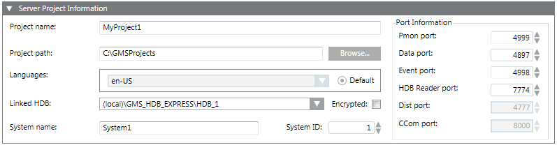

Server Project Information Expander
The Server Project Information expander allows you to configure the general details of the project that you are about to create.


NOTE 1:
In the entry fields of the management platform, you must not use any characters other than A through Z, numbers 0 through 9, and a hyphen (-).
NOTE 2:
If the installation path (shown in the Project path field) includes certain illegal character sequences this will not be detected by the Installer. However you will not be able to launch the System Management Console. Similarly, if you include illegal characters in the Project Name field while creating a project in the SMC, you cannot create the project.
Item | Description |
Project name | Allows you to assign a name to the project. |
Project path | Displays the default project path [installation drive:]\[installation folder]. You can change this path by clicking Browse. |
Languages | (Optional) Make sure that you have selected the desired languages in addition to the default (en-US). To save space, only install the languages that will be used at your site. Once a project is created, only the librarian can change the language settings. |
Default: Allows you to set the project language as the default language that the Server components will use to produce language-dependent contents. For example, in Journaling, the Date/Time fields are printed in this project language. By default, the project language en-US is set as default. You may edit this language after project creation by clicking Edit from the Project Settings tab. | |
Linked HDB | Allows you to link a history database to the project for keeping a log of the project’s data. By default, the database selected, if any, for the currently configured project. If the selected database is no longer available (deleted), the Linked HDB drop-down list displays Unknown (in red). |
System name | Allows you to add the name of the system associated with the project. The default system name is System1. For example, in the following path—WillisTower.Bldg.Zone.RoomTemp—WillisTower represents the system name. |
System ID (1 through 2048) | Allows you to assign a unique identifying (ID) number to the system. Valid values are 1 through 2048. Accept the default ID of 1, unless you are installing multiple servers on the same site. In this case, give each server a unique number. |
Port Information | Pmon port is on the server, client and FEP and is used to communicate with the project's Process Monitor. The SMC communicates with projects through the Pmon port for various functionalities including monitoring project status ( |
Data port is on the server and is used to communicate with the data manager of a project. For example, the Data port is used for communication between the data manager and other managers of the same project. | |
Event port is on server and is used to communicate with the Event manager of a project. For example, the Event port is used to communicate between Event manager and other managers of the same project. | |
HDB Reader port is on the Desigo CC server and is used to communicate with the HDB Reader manager of a project. | |
Dist Portis on the server and is used to set up distribution between two systems (projects). | |
CCom port is used by the CCom manager of the project to communicate with IIS. This allows you to work with Windows App client. |
Technical Tips For Configuring Ports
- The default port values are the same as those in the config file in the installation path
[installation drive:]\[installation folder]\GMSMainProject\_DefaultProject\config. - No two started projects can have the same port numbers. Also, you cannot start a project that has the same data and event port numbers as the currently active project.
- The SMC allows you to configure the ports during project creation, editing, and upgrade and during web site configuration. If you try to configure a port that is already being used by another project, the SMC detects it and prompts you to edit the port number. You must edit the port numbers within the specified range for that port.
- You can edit the port values using Edit
 only when the project is stopped.
only when the project is stopped.
The following table shows the meaning of the color codes used during port configuration. Note that the port color codes apply to the project as well as to the web site ports on the server, including the web site ports on the remote web server.
Note that the color coding only appears for projects on a Server. Projects configured on a Client/FEP station do not display color coding.
Color for a Port | Meaning | Example |
Black | Port bound to the local machine (not network visible). No need to open this port in the Windows firewall. | The Pmon port is bound to the local host. Therefore, it always displays in black. |
Grey | Port not in use. No need to open this port in the Windows firewall. | The CCom port displays in grey when the Web Server Communication is disabled. |
Blue | Port is in use and secured. The port must be opened in Windows firewall. | The Proxy port displays in blue, if the server/client communication is secured. |
Red | Port is in use but local. It can be opened in the Windows firewall. | The CCom port displays in red if the Web Server Communication is Local. |